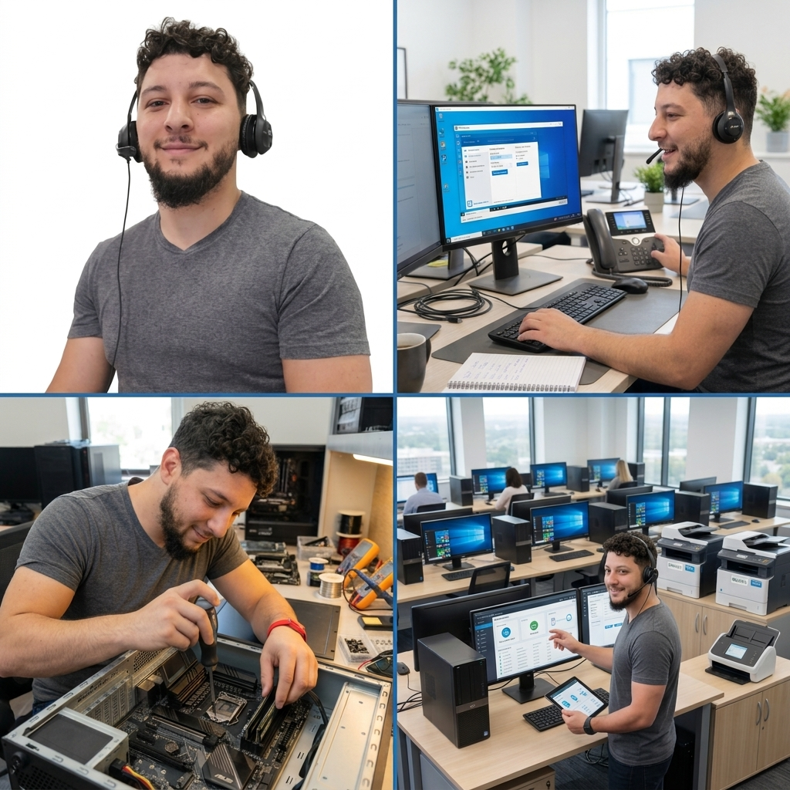

Soporte remoto y presencial
Resuelvo problemas a distancia o voy hasta tu casa u oficina.

Soy Lucas Vargas, técnico en soporte informático. Ayudo a personas y empresas a mantener sus equipos funcionando, resolver problemas y trabajar sin interrupciones.
Resuelvo problemas a distancia o voy hasta tu casa u oficina.
Diagnóstico y cambio de discos, memorias, fuentes y otros componentes.
Instalación de sistemas, usuarios, actualizaciones y copias de seguridad.